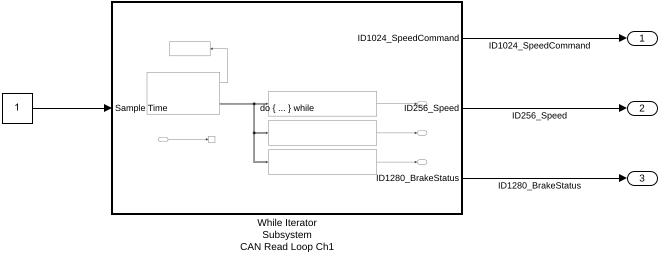
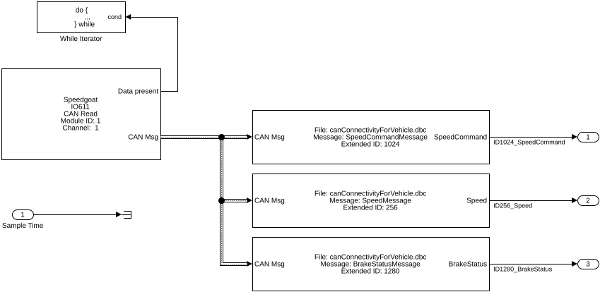
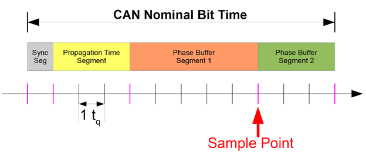
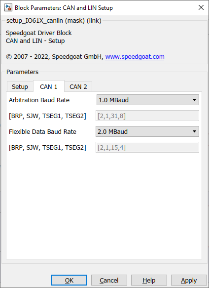

IO61X Usage Notes
IO61X Usage Notes — Usage information about the CAN I/O modules
CAN Message Types
The CAN and CAN FD messages are defined using the CAN_MESSAGE_BUS and CAN_FD_MESSAGE_BUS Simulink bus datatypes, which contain individual signals for the different properties of the message. For CAN, a non-bus datatype is available to support the "SAE J1939" and "XCP over CAN" Simulink blocks. With the exception of these two use cases, using the non-bus datatype is not recommended.
The CAN_MESSAGE_BUS and the CAN_FD_MESSAGE_BUS datatypes contain the following signals:
To create a bus object in the base workspace for the Simulink CAN and CAN FD message bus, refer to the MathWorks VNT documentation for canMessageBusType and canFDMessageBusType.
CAN and CAN FD Message Bus Signals
| Signal | Description | Datatype |
|---|---|---|
| ProtocolMode* | Protocol mode defined as CAN (0) or
CAN FD (1). | uint8 |
| ID | ID of the message, specified as a numeric value. | uint32 |
| Extended | Specifies whether the message ID is of standard or extended type.
The value (1) indicates that the ID is of extended type
(29 bits), (0) indicates standard type (11
bits). | uint8 |
| Length | Message length in bytes. | uint8 |
| Remote | Specifies if message is remote frame - either true
(1) or false (0). | uint8 |
| Error | Specifies if message is error frame - either true
(1) or false (0). | uint8 |
| BRS* | Specifies if message uses bit rate switch - either
true (1) or false (0). | uint8 |
| ESI* | Specifies message error state indicator - either
true (1) or false (0). | uint8 |
| DLC* | Data length code value. | uint8 |
| Reserved* | - | uint32 |
| Timestamp | Message received timestamp when read from CAN interface. | double |
| Data | Contains the packed data of the message. | uint8 |
(* only used with CAN FD messages.)
CAN Read Modes
The CAN Read block can be used in one of two different read modes: Single Read from Buffer (FIFO) and Specify by IDs. This defines how the CAN messages are read from the bus.
Single Read from Buffer (FIFO)
With Single Read from Buffer (FIFO), all CAN messages that are available on the specified CAN channel are stored in a message queue, which is implemented as a First-In-First-Out (FIFO) buffer. In this mode, the CAN Read block has direct access to this buffer and if there are messages in the message queue, the Data present outport will be 1. With every execution of the CAN Read block, one single message is read from the queue and output on the CAN Msg output port.
To ensure that the complete receive buffer is processed and emptied in one sample step, the CAN Read block must be executed multiple times until the Data present outport indicates that there are no messages remaining in the queue. This can be achieved with a do-while subsystem construction, which will result in multiple iterations of the complete subsystem. Consequently, every CAN message that has been read from the bus can be processed individually and the complete buffer is cleared in every sample step.
The maximum number of iterations is set in the While Iterator block in the Simulink/Ports & Subsystem library. It can be set to unlimited iterations with (-1) but it is best practice to limit this to 500 iterations.
Inside the subsystem, multiple CAN or CAN FD unpack blocks can be directly connected to the CAN Msg output port. The matching IDs are then unpacked into the signals of the message and can be routed out of the subsystem. If multiple messages with the same Message ID are received, only the most recent messages will appear in the do-while subsystem output.
The sample time of the subsystem is defined by Simulink inheritance rules: If the subsystem does not have input ports, it will inherit the fundamental sample time of the model. Alternatively, the sample time of the subsystem can be controlled by adding an input port, with a connected signal that has a defined sample time. The sample time must be chosen depending on the bus load in order to avoid buffer overflow during one sample step.
A limitation of this read mode is that there can only be one CAN Read block per channel configured with the Single Read from Buffer (FIFO) mode. Therefore, all CAN messages that are received on this channel, must be processed inside this subsystem.
Top Level View

Inside the While Iterator Subsystem

The Sample Time input port defines the rate at which the subsystem is executed. If the Sample Time is not defined, the subsystem will run on the base rate.
Specify by IDs
If the application only requires specific CAN IDs and the most recent data of a CAN message, the Specify by IDs read mode can be used. In this mode, no While Iterator block is required and the number of CAN Read blocks per CAN channel is not limited. When reading the same ID with different CAN Read blocks, execution with different sample times is supported and all the blocks will read the most recent CAN message.
Initialization and Termination CAN Messages
The CAN Setup driver block allows users to define individual CAN messages to be sent during initialization and termination of the real-time application. This functionality can be used to initialize or terminate other CAN nodes (such as data loggers) on the network.
The initialization and termination CAN messages must be defined with structure arrays that require the following specific field names:
Channel: Selects the CAN channel on which the message is sent.
Protocol: Defines the protocol type of the message to be either CAN or CAN-FD. The permitted data range is automatically adjusted to [0 8] byte for CAN or [0 64] byte for CAN-FD.
BRS: Defines whether the fast data baud rate should be used for CAN-FD. Valid values are either 0 for standard baud rate or 1 for fast data baud rate (double).
Type: Defines whether the message to be sent is of a standard or extended type. Valid values are either Standard or Extended (character vectors).
Identifier: Defines the identifier of the message. The value (scalar) must be in the corresponding identifier range (standard or extended).
Data: Defines the data frame to be sent out along with the CAN message. The length of the row vector defines the data frame size. The limits depend on the selection made for the Protocol parameter.
Pause: Defines the amount of time, in seconds, that the Setup block waits after a message has been sent before sending the next message. Valid values are 0–0.05 seconds. Some CAN nodes need time to settle before they can accept the next message; for example, the node must settle when the previous message sets a new operational mode. Use this field to specify the idle times.
Initialization and Termination Structure
In MATLAB, the following script can be used to create the initialization and termination structure. The initCAN and termCAN variables must be specified in the CAN setup block for the Initialization Structures Array and Termination Structures Array fields.
% create Initialization structure initCAN.Channel = 1; initCAN.Protocol = 'CAN-FD'; % 'CAN' or 'CAN-FD' initCAN.BRS = 1; % 0 or 1 initCAN.Type = 'Standard'; % 'Standard' or 'Extended' initCAN.Identifier = 99; % ID must be double initCAN.Data = [8 8 8 8 8 8 8 8]; initCAN.Pause = 0.05; % create Termination structure termCAN.Channel = 1; termCAN.Protocol = 'CAN-FD'; % 'CAN' or 'CAN-FD' termCAN.BRS = 1; % 0 or 1 termCAN.Type = 'Extended'; % 'Standard' or 'Extended' termCAN.Identifier = double(0xFFF); % ID must be double termCAN.Data = [1 1 1 1 1 1 1 1]; termCAN.Pause = 0.05;
Baud Rate Configuration
The IO61X I/O modules offer both pre-defined Baud Rates and custom configurations.
The CAN driver uses a CAN Controller, which monitors the serial bus line and performs sampling and adjustment of the sample point by synchronizing with the start-bit edge and resynchronizing with the following edges.
According to the CAN specification[2], the nominal bit time is split into four segments:

The basic time unit of the CAN Nominal Bit Time is time quantum (t_q). The length of one time quantum is determined by the clock rate of the CAN controller and a Baud Rate Prescaler. While the synchronization segment has a fixed length, the other three sections are programmable.
Sync Seg: The Synchronization Segment (Sync Seg) has a fixed length of one time quantum (1 t_q). The edges of the bus level are expected to occur during the Sync Seg. If an edge occurs outside of Sync Seg, its distance is called the phase error of this edge. On the other hand, if the edge occurs before Sync Seg, the phase error is negative.
Prop Seg: The Propagation Time Segment (Prop Seg) compensates for the physical delay times within the CAN network. These delay times consist of the signal propagation time on the bus and the internal delay time of the CAN nodes.
Phase Seg1: The Phase Buffer Segment 1 (Phase Seg1) compensates for positive phase errors and may be lengthened during resynchronization. The end of this segment defines the Sample Point (SP).
Phase Seg2: The Phase Buffer Segment 2 compensates for negative phase errors and may be shortened during resynchronization.

Baud Rate parameters:
BRP: Baud Rate Prescaler (BRP). The bit time quantum (t_q) is obtained by dividing BRP by the CAN controller clock rate (CAN_Clk = 80.000.000 [Hz]).
SJW: Synchronization Jump Width (SJW) value used for the synchronization. This will be SJW + 1. The SJW value must not exceed the time quanta assigned to Phase Buffer Segment 1.
TSEG1: Time segment before the sample point. This covers the Propagation Time Segment and Phase Buffer Segment 1. The TSEG1 value used for the bit timing will be TSEG1 + 1.
TSEG2: Time segment after the sample point. The TSEG2 value used for the bit timing will be TSEG2 + 1. The minimum value of TSEG2 is the configured SJW.
The following formulas are used for calculating the CAN bit rate:
t_q = BRP / CAN_Clk
t_BS1 = t_q * (TSEG1 + 1)
t_BS2 = t_q * (TSEG2 + 1)
NominalBitTime = t_q + t_BS1 + t_BS2 = t_q * (1 + TSEG1 + TSEG2)
CAN Baud rate = 1/NominalBitTime
Depending on the cable length and machine setup, the Sample-Point can be rather late, for example, 87.5% (recommended value from CiA).
Remote frames
![[Note]](images/note.png) | Note |
|---|---|
For reading Remote Frames with an IO61X channel works solely with the Read block parameter Read Mode set to Single Read from Buffer (FIFO) |
| Note |
|---|---|
When using Remote Frames with the IO61X modules, alongside with the Rtr bit being set, the DLC has to set to zero. This applies to both CAN Pack and CAN Unpack blocks. |
Usage of LIN Pack and Unpack Blocks
In order to support the Simulink LIN Pack and Unpack blocks, the DLC parameter for the respective LIN Write and Read block must always be set to 8. Unused data fields are filled with zero.
When reading LIN messages in a triggered subsystem, as recommended, the output of the Enable block must be connected to the Msg Updated input of the LIN Unpack block.
To successfully load a LIN Descriptor File (.ldf), the following requirements must be met:
The line endings in the .ldf file must conform to the Windows style (CR LF).
Use the .ldf file of the LIN product example as a template.
Do not rearrange the order of the sections in the .ldf file, delete them or leave them empty. If necessary, placeholder elements must be added. In the simplest configuration, only the entries "Signals", "Frames" and "Signal Encoding Types - physical_value" have an influence on the functionality of the LIN Pack and Unpack blocks.
The "physical_value" encoding type is supported for the "Signal Encoding Types" section but must not be used due to unhandled cases. All other encoding types are currently not supported and can therefore be used as placeholders.
The following functions are supported by the LIN Pack and Unpack blocks:
The parameter "init_value" is supported for the "Signals" section of the LIN Unpack block.
[2] ISO 11898-1, Road vehicles – Controller area network (CAN) – Data link layer and physical signaling, 2015